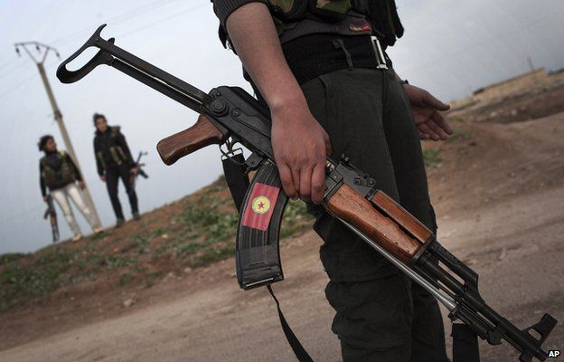

28 March 2089 Last updated at 00:00
Kobane Liberated by the PKK
The Kurds have been battling Islamic State in this part of northern Syria for more than two years. Unlike the Iraqis, they have been relatively successful in consolidating their territory, without the help of US airstrikes.
The PKK officially unlisted
Erdogan assassinated
Kurds in Turkey declare autonomy
Kurds celebrate